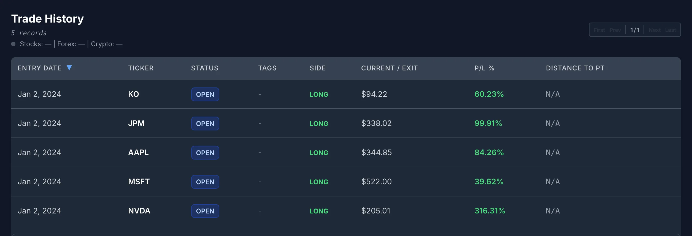
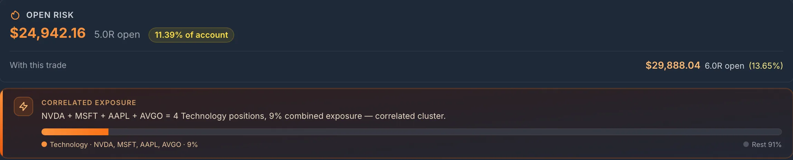

Concentration by Drift
Start with the clean version. You put $20,000 into each of five stocks, $100,000 in all. Four of them go nowhere. The fifth quadruples. You now hold $80,000 of the winner and $80,000 of everything else: one stock is 50% of the book, and you never bought a share after day one.
Real portfolios are messier, because the other four don’t sit still, but the drift is the same. Here is a hypothetical holder who bought about $20,000 each of NVDA, MSFT, AAPL, JPM and KO at the January 2, 2024 open, then did nothing for almost three years. Prices are real Polygon daily bars, adjusted for NVDA’s June 2024 10-for-1 split.
| Stock | Shares | Cost (Jan 2, 2024) | Weight then | Value (Oct 30, 2026) | Weight now |
|---|---|---|---|---|---|
| NVDA | 406 | $19,993 | 20.1% | $83,084 | 37.9% |
| MSFT | 53 | $19,815 | 19.9% | $27,661 | 12.6% |
| AAPL | 106 | $19,838 | 19.9% | $36,531 | 16.7% |
| JPM | 118 | $19,953 | 20.0% | $39,771 | 18.2% |
| KO | 340 | $19,992 | 20.1% | $31,987 | 14.6% |
| Total | $99,590 | 100% | $219,034 | 100% |
NVDA rose 4.16x (up 316%). Everything else rose too, by 1.4x to 2.0x, which is why NVDA is 37.9% of the book and not the clean example’s 50%. The speed is the part people underestimate. Run the same book day by day and NVDA crossed 25% of it on February 5, 2024, five weeks after purchase, and 30% on March 6, 2024. It passed 40% in July 2025 and peaked at 45.2% on May 14, 2026. At no point did the holder choose any of those numbers.
This is also why concentration by drift feels fine. It arrives as good news. The position that grew is the one you were right about, and trimming it feels like punishing the best decision you made. That feeling is real, and it is also not a measurement. A stock that is 38% of your money moves your whole account by 3.8% for every 10% it moves, whether you were right to buy it or not.

Effective Number of Positions
“I own five stocks” stops being true the moment the weights move apart. The standard way to say how many positions you effectively own is the inverse of the sum of the squared weights:
Each weight is a fraction of the book (37.9% is 0.379). The sum underneath is the Herfindahl index economists use for market concentration. With five equal weights of 0.2 it gives 1 ÷ (5 × 0.04) = 5.0, as it should. One position at 100% gives 1.0.
The clean example, one name at 0.5 and four at 0.125:
1 ÷ 0.3125 = 3.2 effective positions
The real book on October 30, 2026:
= 0.144 + 0.016 + 0.028 + 0.033 + 0.021 = 0.242
1 ÷ 0.242 = 4.13 effective positions
At NVDA’s May 2026 peak the same calculation gave 3.55. Five stocks, owned like three and a half. The number is useful because it is one figure you can track between reviews, and because it falls for any kind of concentration, not just the one you’re watching. It is a spreadsheet job: five weights, five squares, one division.
Sector Is the Second Layer
Look at the book again, by what the companies do. NVDA, MSFT and AAPL are three names, but on a bad day for large-cap technology they tend to fall together. Group the weights by sector and run the same formula:
| Sector | Names | At purchase | Oct 30, 2026 |
|---|---|---|---|
| Technology | NVDA, MSFT, AAPL | 59.9% | 67.2% |
| Financials | JPM | 20.0% | 18.2% |
| Consumer Staples | KO | 20.1% | 14.6% |
| Effective sectors | 2.28 | 1.97 |
The drift didn’t create the sector problem. It was there on the day of purchase: an “equal-weight, five-stock” book that was 60% one sector from the first trade. Drift only made it worse. By October 2026 the holder owns five stocks, about four effective positions, and fewer than two effective sectors.
The way this usually gets worse is at the next purchase. The holder notices NVDA is too big, wants to “diversify,” and buys another chip or software company they understand. Different ticker, same bet. The trap at the stock level is drift you didn’t choose; the trap at the sector level is a purchase you did choose that feels like diversification.
Sector is a coarse label, and there is no single correct classification: different sources group companies differently, and two companies in one sector can behave very differently. Treat it as a first check, not a correlation model.
Trim, Hold or Hedge: Writing the Rule Down Before It Matters
There is no correct concentration. Plenty of investors hold a 40% position on purpose and know exactly why. The problem is a 40% position nobody decided on. So the fix is not a number; it is a decision written down in advance, while the position is not in front of you moving. Three honest options:
- Trim to a cap. Pick a ceiling and a target below it, and a moment to check: “at a month-end close, any name over 30% is trimmed back to 25%.” The gap between the two numbers stops you trading every wiggle. In a taxable account a trim realizes a gain, and that cost is real. Put it in the rule (a higher cap, or trimming only in tax-advantaged accounts) rather than letting it become the reason the rule never fires.
- Hold on purpose. Keep the position, but write down why it deserves its size today, as if you were buying it at today’s price, and what would make you trim. The investment thesis journal covers how to write that so it can be checked later.
- Hedge. Offsetting a position with options or a short in a related fund keeps the shares but costs money and adds a second position with its own rules. If you go this way, write the hedge’s exit down too.
Two more rules cost nothing and catch most of the damage. A no-adds rule: no new name in a sector while that sector is above a set share of the book. And a giveback check: if you set a sell line when you bought, see what it means now. In the demo book NVDA’s line is $37, set about 25% below the 2024 purchase. At $204.64 a fall to that line would cost $68,062, or 31% of the whole book. A line that capped the risk at 5% of the account in 2024 no longer caps it at anything like 5%. Whether to raise it is your call, but it should be a call, not something you never looked at.
A rule written at the review is only half the job. The other half is the note that says what you saw when you wrote it, so the next review compares against numbers rather than a feeling:

What SignalDeck Checks
SignalDeck checks the sector layer at the moment it usually goes wrong: when you log a new stock position. Suppose the holder above, keen to diversify away from NVDA, starts logging a $19,891 purchase of AVGO (61 shares at $326.08, sell line at $245). Before they save it, the New Trade form shows this:

“4 Technology positions” is the sector point made for you, at the right moment. The “9%” needs reading carefully, because it is not the 67% from the table above. The two numbers answer different questions:
| Number | What it measures | Technology here |
|---|---|---|
| Market-value weight | What share of your money sits in the sector today. | 67.2% (3 names) |
| SignalDeck’s combined exposure | Shares × the distance from your entry price to your stop (your sell line), added up across the sector and divided by the account size you set in your Risk Profile. | 6.8% (3 names) 9% with AVGO |
Exposure measured from entry to stop is the right number for a trader deciding how much a new position can lose. It is the wrong number for drift, because it is set by your entry and your stop, not by today’s price: NVDA’s risk in that figure is still 406 shares × ($49.24 − $37), about $5,000, however far the stock has run since. That is why the market-value weights and the effective-positions number above are worth keeping by hand next to it.
What the check does and doesn’t cover, stated plainly:
- Stocks only. It groups your open stock positions. Crypto, forex and futures positions are not included. ETFs are grouped together in a bucket of their own rather than by sector.
- It follows the strategy you pick. If you choose a strategy on the New Trade form, only open positions in that strategy are compared. Keep your holdings under one strategy, or leave it unset, if you want the whole book checked.
- Sector comes from the industry code, not from you. Each stock is classified from its SIC code in market reference data. A stock whose code isn’t in SignalDeck’s sector map joins no group, and in this demo book JPM was one, so the check can under-count. Stocks priced from a non-US exchange aren’t grouped either.
- It warns from the second name. A new trade that would make two or more open positions in one sector shows the warning.
- The percentage needs an account size and stops. Without an account size in your Risk Profile you get the names and count but no percentage. A position with no stop still counts as a name in its sector but adds no dollars.
- No portfolio weights. SignalDeck doesn’t compute market-value weights or effective positions for you. The arithmetic in this post is the five-minute version you do yourself.
- No tax lots. It doesn’t track cost-basis methods or what a trim would cost in tax.
For what else to record on a stock position, see the stock trading journal guide. For the risk-first view of a whole equity book, equity prop desk metrics covers what to track instead of win rate.
The portfolio is hypothetical: a demo account, not a real holding, and not a recommendation to buy, hold or sell any of these stocks. Prices are Polygon daily bars, split-adjusted: entries at the January 2, 2024 open, values at the October 30, 2026 close. The dates NVDA crossed 25%, 30% and its peak weight are from daily closes. The note was saved on October 30, 2026; the trade-history screenshot uses the app’s live quotes from the same evening.
FAQ
What percentage of my portfolio should one stock be?
There is no single right number, and anyone who gives you one doesn’t know your situation. Two frameworks help. First, the loss you could live with: a position’s weight times a fall it could plausibly take is what it would cost the whole portfolio, so a 40% position that halves costs you 20% of everything. Second, the decision: whatever the number, set a cap and a target below it in writing before a winner reaches it, so the size is something you chose rather than something that happened.
What is effective number of positions?
It is how many equal-sized positions your portfolio behaves like: 1 divided by the sum of each position’s squared weight. Five equal positions give 5.0. If one of five grows to half the portfolio while the rest stay flat, it falls to 3.2. The same formula applied to sector weights gives effective sectors, which is often lower than people expect.
Should I trim a winning stock?
Only you can decide, but decide it deliberately. Trimming locks in part of a gain and lowers the damage a single reversal can do; it may also cost tax in a taxable account and gives up some upside if the stock keeps running. A useful test is whether you would buy the position at today’s size and price with fresh money. If not, a written trim rule is the honest answer. If so, write down why, and what would change your mind.
Related Articles
Write Your Sell Rule Before You Buy
The investment journal for long-term holders.
Stock Trading Journal
What to record on a stock position, and why gaps matter.
Equity Prop Desk Metrics
What to track on an equity book instead of win rate.
Fixed-R Position Sizing
Sizing every position from the risk you agree to take.
Decide your position sizes before a winner decides them
Log your holdings, get a sector warning before you add another name to a crowded sector, and keep each review and rule as a dated note. Free during beta; Pro is $30/mo and Elite $50/mo when billing launches.